Six words to connect
Type six simple words on the other device. The handshake travels encrypted through public relays that cannot read it.
Open filefinch on two devices, type six words, then drop your files. They fly from one device to the other, any size, end to end encrypted. No account, no upload.
Animation: a computer shows six words, a phone types them, both confirm with six more words, then three files fly from the phone to the computer and arrive checked.
Runs in the browser on
Chrome / Edge / Firefox / Safari / Brave / Opera
How it works
No account, no upload. Press a step to see it, or let it play.
Prefer zero third parties? Use an invite link or its QR code instead. It carries the handshake itself, so no relay passes anything along.
Any size
Files are read in small chunks and written to disk as they arrive, so a 50 GB video flies the same way as a photo.
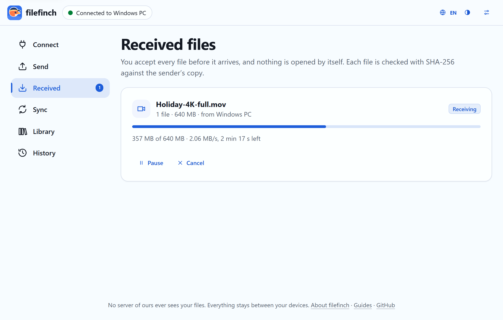
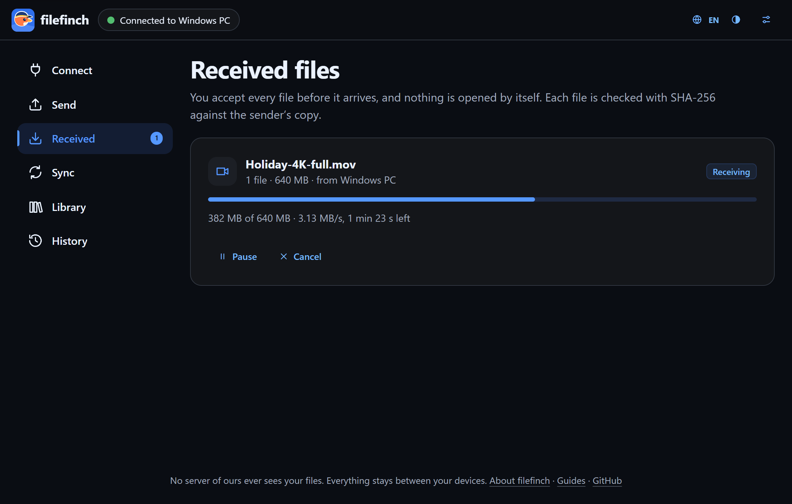
Resilient
Wi-Fi blinks, a phone sleeps, a laptop lid closes. Reconnect and the transfer continues from the last confirmed chunk.
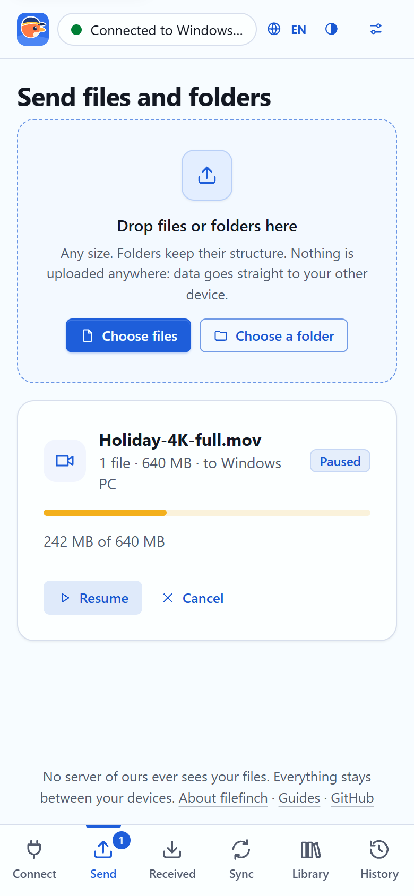
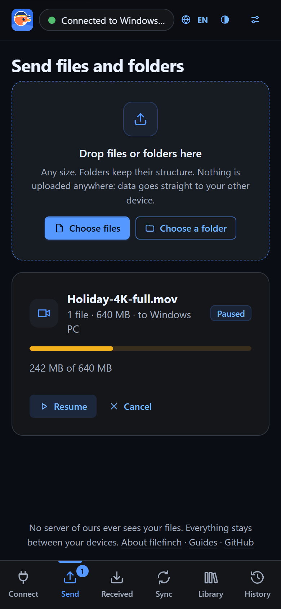
Folders
Drop a folder and its tree flies as a flock. Or keep a folder in step between two computers, sending only what changed.
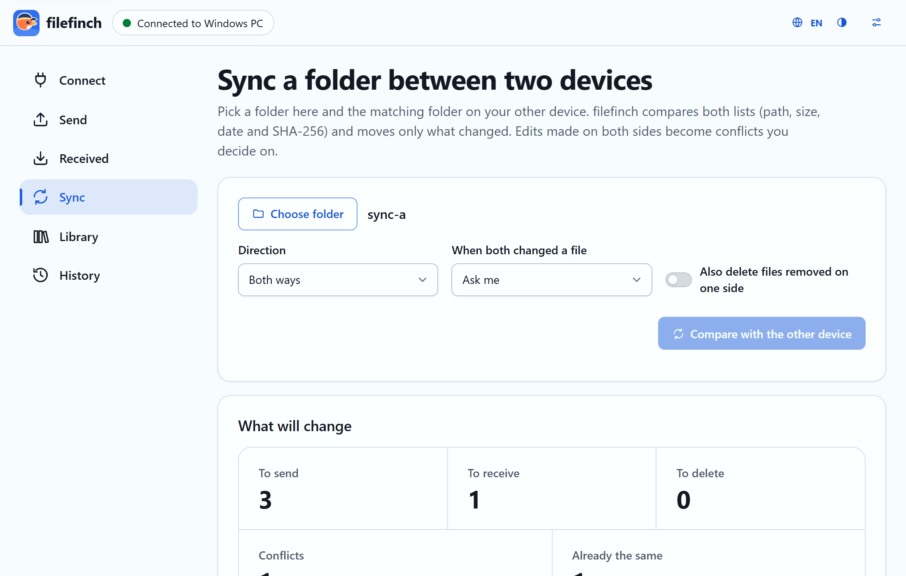
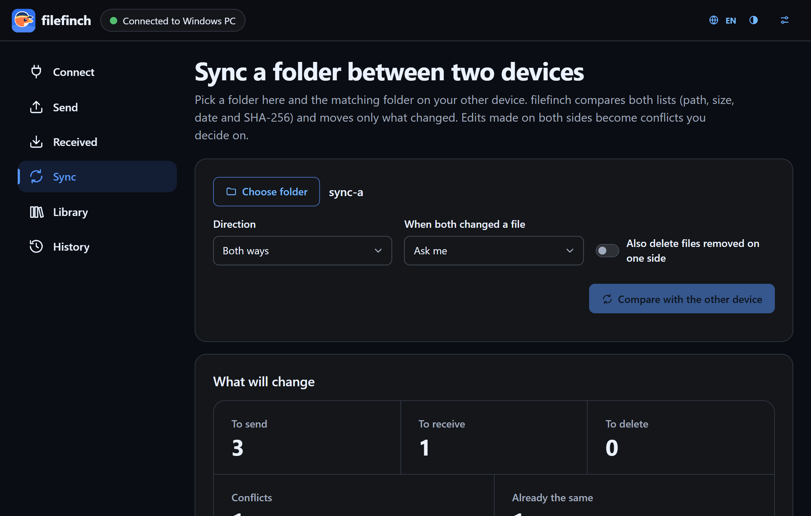
Private by design
filefinch is a web page that connects two browsers to each other. After that, it steps out of the way.
The honest part. The 6 word handshake travels through public MQTT relays, which see that two devices exchange a few small encrypted messages, never what they say. Your files never touch them. When both networks block every direct route, a TURN relay you configure can forward the encrypted traffic. To find a route, each browser asks a public STUN server for its public address, which sees your IP address like any website. With an invite link instead of the words, nothing relays the handshake at all.
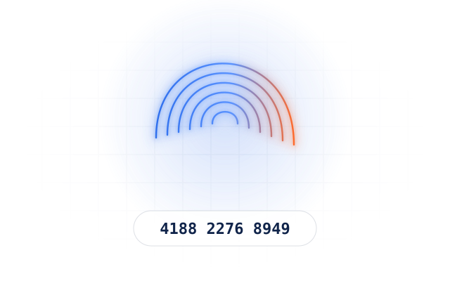
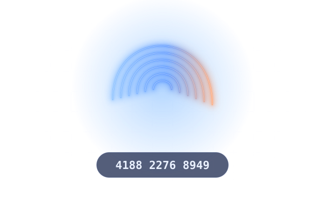
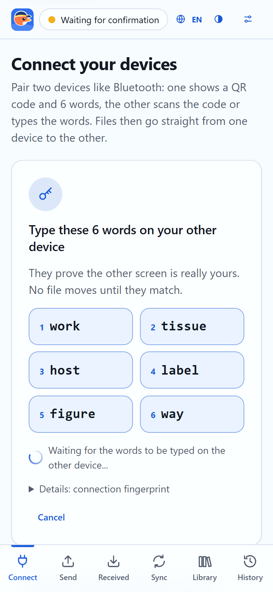
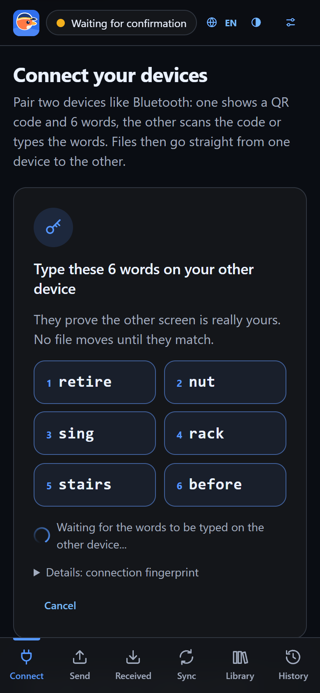
Library and previews
Preview photos, video, audio, PDF and text right in the browser, and keep what you want in a local library on your own device.
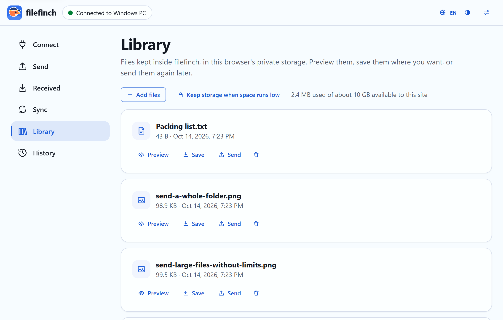
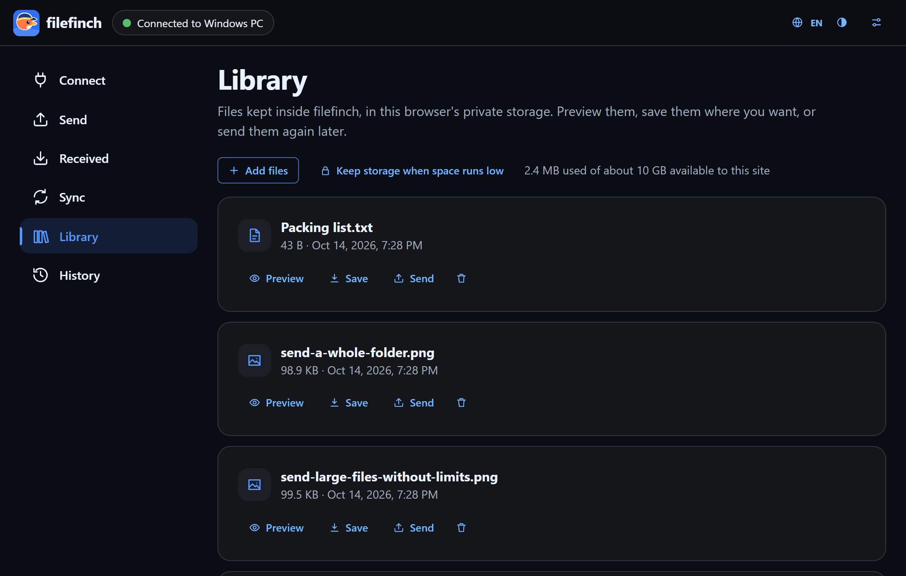
Features
Built for real files: big videos, deep folders, flaky Wi-Fi and phones that fall asleep.
Type six simple words on the other device. The handshake travels encrypted through public relays that cannot read it.
Send a note or a link to your other device, like a shared clipboard. Texts typed while offline go out on the next connection.
Paired once? Next time pick the device and type only the confirmation words. Forget it whenever you like.
Prefer no relay at all? The invite link or QR code carries the whole handshake, answered with one reply.
The tree arrives intact. Incoming paths are sanitized, so nothing lands outside the folder you pick.
Reconnect and the transfer continues from the last confirmed chunk instead of starting over.
Two way, push or pull. You review the plan of changes before anything is written.
Every file is hashed while it streams and verified by the receiver before it is marked done.
After pairing, type the six words shown on the other screen. A device that only saw your code gets different ones.
PBKDF2 with 600,000 rounds to an AES-GCM key on each device. Every chunk is sealed again.
Photos, video, audio, PDF and text, drawn so a received page or script never runs.
Keep received files in this browser on your own device, to save or send again later.
Install it as an app. Once loaded, invite links work without internet on a local network.
When a direct route is blocked, filefinch explains why and lets you add your own TURN relay.
Device scenarios
filefinch runs in the browser, so the pair can be anything with a modern browser.
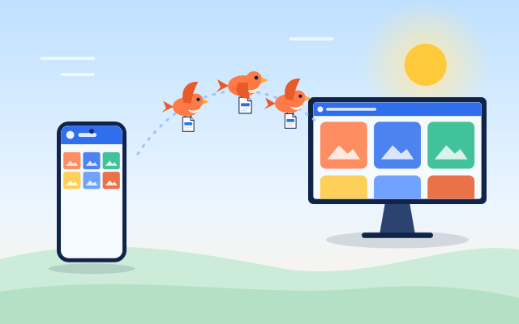
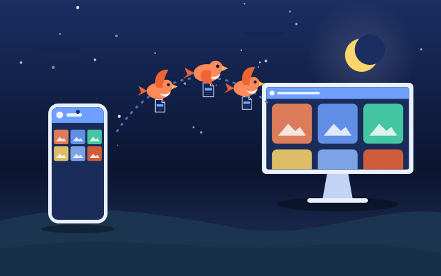
Videos arrive in their original quality and size. Nothing is recompressed.
Start sending
Two approaches
Both are useful. Uploading to storage is great when the receiver is offline. A direct transfer is better when you want the file on your other device now, privately and without limits.
| Upload to cloud storage | Direct with filefinch | |
|---|---|---|
| Where your files go | Uploaded to a storage service, then downloaded | Straight from one device to the other |
| Waiting time | Upload first, then the download can start | The receiver gets data as soon as it is sent |
| Account | Usually needed, at least for large files | None |
| Size limits | Set by the plan you are on | None set by filefinch |
| Copies left online | Until a link expires or you delete them | None, nothing is stored online |
| Who can read the files | The service can, unless it offers client side encryption | Only the two devices (DTLS, plus an optional passphrase) |
| Both devices online | Not needed, the receiver can download later | Needed while the files fly |
| Works without internet | No | Yes, with an invite link on the same local network |
Limits, honestly
No middle storage means a few rules of the air. Here they are, before you find out the hard way.
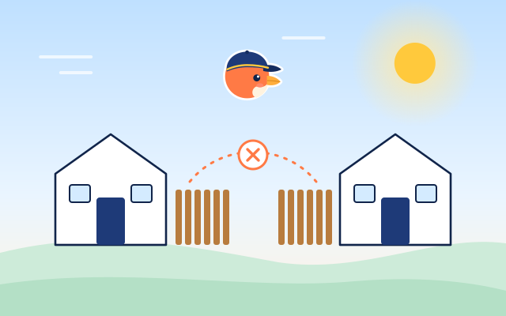
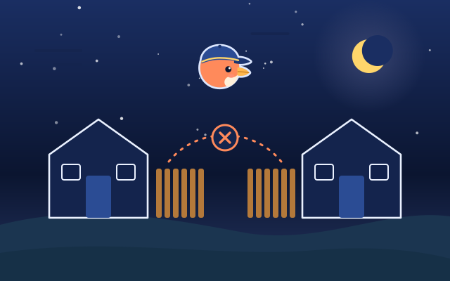
FAQ
Yes. It is free and open source under the MIT license. There are no plans, no ads, no account and no tracking. Since there is no server of ours carrying your files, there is nothing to pay for.
The first device shows six words from a list of 2048 simple English words, plus a QR code that holds the same words. Type them on the other device: the first four letters of each word are enough. The short handshake the two browsers need to find each other travels encrypted through public relays that cannot read it. The code works once and expires in 10 minutes. Once the devices meet, one shows six new confirmation words to type on the other, so a device that only saw your code cannot join. Your files then go straight from device to device.
No. Files travel over a direct WebRTC connection between your two browsers. The 6 word handshake passes through public relays as ciphertext, and when both networks block direct routes a TURN relay can forward the encrypted traffic. No server of ours is ever involved.
Instead of six words, share an invite link or show its QR code. The link itself carries the handshake, the other device answers with a short reply code, and no relay passes anything along. Like every mode, the browsers still ask a public STUN server for their public address.
filefinch sets none. Files are read and sent in 64 KiB chunks and written to disk as they arrive, so a 50 GB video works like a photo. The real limits are free space on the receiving device and both devices staying connected.
Yes. There is no storage in the middle, so the sender and the receiver must both have filefinch open while the files fly. If one closes the tab, the transfer can resume when you reconnect.
Yes. Pick or drop a folder and filefinch sends every file with its relative path. In browsers with folder access the tree is written straight into a folder you pick; elsewhere the folder arrives as one streamed .zip download.
Yes. filefinch runs in the browser, so any pair of modern browsers can connect: Android to iPhone, Windows to Mac, phone to PC or laptop to laptop.
Usually one network is very strict (symmetric NAT or a corporate firewall). filefinch detects the failed connection, explains it in plain words and offers the TURN setting. Trying another network, like a phone hotspot, often works too.
Once the app is loaded or installed, the invite link mode works offline: two devices on the same local network can connect. The 6 word mode needs internet to reach the public relays.
Guides
Short guides to the main things filefinch does.
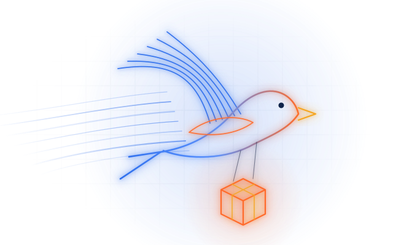
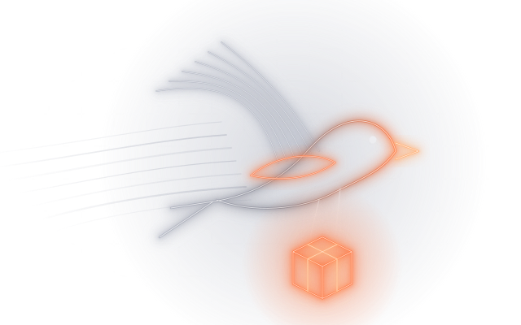
Open filefinch on two devices and send your first file in under a minute. Free, open source, no account.
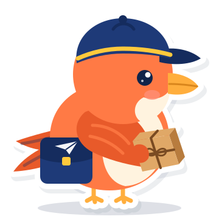
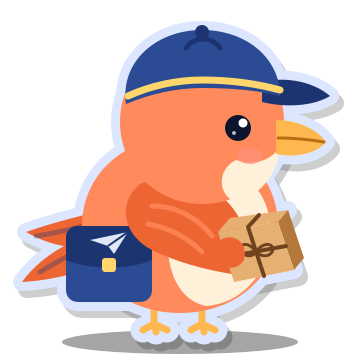